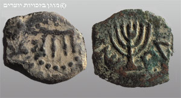

Cuando un rey griego puso un altar a Zeus en el Templo de Jerusalén y prohibió la fe judía bajo pena de muerte, un pueblo pequeño hizo lo impensable: se rebeló contra un imperio. Y ganó.
La tensión entre helenizarse y resistir, que vimos crecer en la entrega anterior, estalló a mediados del siglo II a.C. de la forma más violenta. Lo que empezó como un choque cultural se convirtió en una guerra de religión —quizá la primera de la historia librada explícitamente por la libertad de culto—. Y de ella nacieron una dinastía, una fiesta que aún se celebra, y un eco que llega hasta el libro más enigmático de la Biblia.
Tras el reparto del imperio de Alejandro, Judea quedó en manos de los seléucidas, la dinastía griega de Siria. Durante un tiempo toleraron la religión judía. Todo cambió con Antíoco IV, que se dio a sí mismo el sobrenombre de Epífanes ("dios manifiesto") —sus enemigos lo llamaban Epimanes, "el loco"—.
Hacia el 167 a.C., Antíoco hizo algo sin precedentes: en vez de tolerar, decidió erradicar la religión judía. Prohibió la circuncisión, el sábado y las leyes alimentarias, todo bajo pena de muerte. Y cometió la profanación suprema: instaló un altar a Zeus en el Templo de Jerusalén y ordenó sacrificar cerdos en él. Para el judaísmo, era el fin del mundo religioso.
La chispa saltó en el pueblo de Modín. Un sacerdote anciano, Matatías, se negó a sacrificar a los dioses griegos y mató al oficial que se lo exigía. Con sus cinco hijos huyó a las montañas y comenzó una guerra de guerrillas. Al morir Matatías, tomó el mando su hijo Judas, apodado “Macabeo” —del griego makkabaios, probablemente "el Martillo", por su ferocidad en el combate—.
Contra todo pronóstico, aquel pequeño ejército campesino derrotó una y otra vez a las fuerzas seléucidas, mucho mayores y mejor armadas. En el 164 a.C., apenas tres años después de la profanación, los Macabeos recuperaron Jerusalén y purificaron el Templo, reconsagrándolo al Dios de Israel.

Un rey griego, Antíoco IV, quiso borrar la religión judía y puso un altar a Zeus en el Templo. Una familia sacerdotal, los Macabeos, encabezó una rebelión y, contra todo pronóstico, venció, recuperó el Templo y fundó un estado judío independiente. La purificación del Templo se celebra hasta hoy como Janucá.
Aquí esta serie conecta con la del fin del mundo. La crisis de Antíoco IV no solo produjo una guerra: produjo literatura, y de un tipo nuevo. Muchos estudiosos sitúan la redacción final del libro de Daniel —la gran obra apocalíptica de la Biblia hebrea— precisamente en estos años, como respuesta a la persecución de Antíoco.
Daniel, ambientado siglos antes en la corte babilónica, hablaba en realidad, de forma cifrada, del presente de sus lectores: la famosa “abominación de la desolación” que profana el Templo alude al altar de Zeus de Antíoco. El mensaje era de esperanza para los perseguidos: los imperios brutales caerán, y Dios establecerá su reino eterno. La apocalíptica, como vimos en su serie, nace del sufrimiento —y aquí vemos su partida de nacimiento histórica—.
La revuelta macabea fue un momento excepcional: la vez que el pequeño Israel venció a un imperio y recuperó su independencia, que mantendría durante un siglo bajo la dinastía asmonea. Pero su legado es doble. Por un lado, un triunfo de la resistencia identitaria —Janucá celebra esa luz que no se apagó—. Por otro, la matriz de la que brotó la esperanza apocalíptica que marcaría al judaísmo y, después, al cristianismo.
La independencia asmonea, sin embargo, no duraría. Un siglo después, un nuevo imperio —más grande, más organizado y más duradero que todos los anteriores— llegaría desde el oeste para no marcharse jamás. En la próxima entrega, Roma entra en Jerusalén.
La persecución de Antíoco IV, la profanación del Templo (167 a.C.), la revuelta macabea, la purificación del Templo (164 a.C.) y la posterior independencia asmonea son hechos históricos documentados por 1 y 2 Macabeos y por el historiador Flavio Josefo. El significado de "Macabeo" como "martillo" es la etimología más aceptada.
La datación de Daniel en la época de Antíoco IV es el consenso de la erudición histórico-crítica, basado en su exactitud sobre los hechos hasta esa fecha; las tradiciones religiosas suelen datarlo en el s. VI a.C. La conexión de la "abominación de la desolación" con el altar de Zeus es ampliamente reconocida.
Este artículo describe historia; el significado religioso de Janucá y de Daniel para el judaísmo se respeta como cuestión aparte.